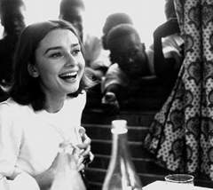
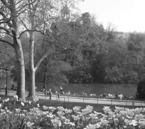
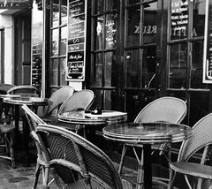

conocenos
Cualquier idea que tengas puede ser llevada a cabo, trae contigo al estudio elementos que quieras incluir en la sesión: adornos, pinturas, peluches.. o cualquier elemento que pueda hacer de tu sesión una distinta y original.

Iluminación controlada, equipo preciso, tiempo, conocimientos, creatividad, y modelos dispuestos a disfrutar, sonreir y pasar un momento fuera de lo común, son los elementos ideales para lograr imágenes que impacten, retratos únicos y de gran calidad.
Cualquier idea que tengas puede ser llevada a cabo, trae contigo al estudio elementos que quieras incluir en la sesión: adornos, pinturas, peluches.. o cualquier elemento que pueda hacer de tu sesión una distinta y original.

Perseguimos retratos que hablen de tu personalidad, de tus gustos, de lo que quieres expresar en una fotografía, del cariño que sientes por tus seres amados, de la emoción al esperar a ese nuevo ser que vive dentro de ti.

Diseñamos y elaboramos atractivos book's y fotolibros de Bebes, niños y Familias, desde el estudio fotográfico, ya sea en fondos blanco, negro, degradado y texturizado o en exteriores con iluminación controlada.

Para nosotros es importante crear un ambiente de confianza y seguridad con nuestros clientes. Pues ponen en nuestras manos importantes momentos, confiando plenamente en nuestro buen gusto. Buscamos imágenes originales que los haga ver bien y muy naturales. Ofrecemos este servicio en nuestro estudio con previa cita o a domicilio. En cualquiera de las dos modalidades ofrecemos la posibilidad de cambios de prendas, pues enriquece visualmente el resultado y brinda más posibilidades de obtener la imagen que necesitas usando distintos colores y atuendos. Si tienes una idea y quieres llevarla a cabo, habla con nosotros, juntos podremos planearla y realizarla, de no tenerla podemos hacer algo original para ti.